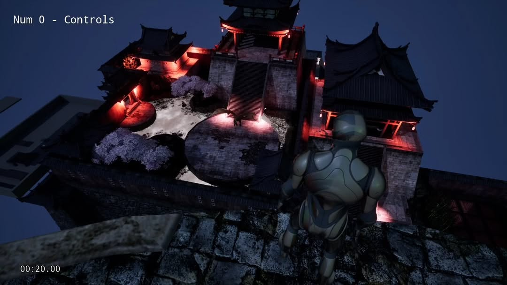

A fast-paced action game where precision meets emotion.

A story-driven prototype of a robotic (for now) samurai with a wielded katana where he can transform into spirit animals, yes, assassin's creed 3 did the same. But this is what an inspired idea looks like. Use the 8 directional movement to manevour along with the dodge mech. You just know i had to do the flash step as well, I was playing Ghost of Tsushima at the time, I don't think you need more info than that.